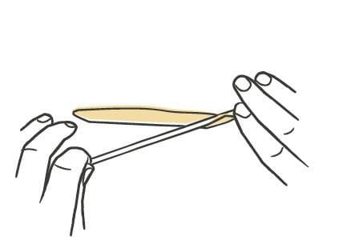
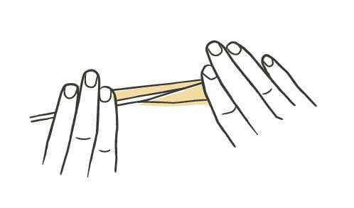
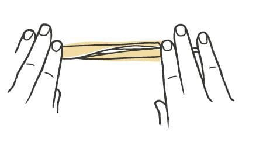
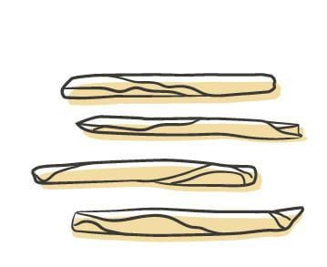

Pasta / Shapes
Fileja
- Dough
- Semolina Dough
- Rest
- 1 to 2 hours
- Source
- Pasta, Missy Robbins
- Formed
- rolled
- Region
- Calabria, near Tropea
Shaping




Method
- Make semolina dough. Dust a wooden board with a little 00 flour. Line a sheet pan with parchment, then dust the parchment with semolina.
- Quarter the dough. Work one piece and keep the rest under plastic wrap or a towel.
- Press the piece into a thick rope by hand. Set the fingertips of both hands together at its midpoint, then roll back and forth while walking your hands apart toward the ends.
- Keep rolling under light pressure until the rope is about 1/2 inch across, roughly as thick as a Sharpie. Cut it in half and roll the halves separately if it gets too long to handle.
- Cut the rope into 1-inch lengths with a knife or bench scraper. Cover the pieces you are not shaping.
- Take one 1-inch piece and roll it out the same way into a thinner rope, pencil-thick and about 5 inches long.
- Lay the rope parallel to the edge of the board. Press the iron into its right end with the iron's left end angled underneath, spread four fingers of each hand along the iron, and roll it up and away from you, flattening the rope lightly as it winds into a wide coil.
- Turn the coil back parallel to you and roll it gently on the board to even out the thickness. Push too hard and the pasta grips the iron, then unwinds as you pull it off.
- Ease the shape off the iron onto the sheet pan. Work through the rest of the cut pieces.
- Repeat from step 3 with the remaining dough.
- Dry 1 to 2 hours, until the pasta stiffens slightly and holds its shape when handled.
- To hold it, wrap the pan in plastic and refrigerate up to 24 hours.
Notes
- Dimensions run 1/2-inch rope, cut at 1 inch, then each piece re-rolled pencil-thin and 5 inches long before shaping.
- Needs a ferretto, or maccheroni iron: a thin rod about the gauge of a knitting needle, which will substitute. It comes round or square, and square is preferred.
- The coil is wide and open, which is what separates fileja from the tight spiral of busiate.
- Refrigerator limit is 24 hours.
- Classically sauced with tomato and 'nduja, Calabria's soft spicy sausage. The shape is chewy and holds up to heavy sauces.